Servicio principal
Nos dedicamos a restaurar y reinventar piezas con historia, combinando oficio tradicional y diseño actual.
Quiénes somos
Somos un estudio de diseño y restauración fundado sobre una premisa: cada mueble tiene una historia que merece continuar.
Nuestra historia

Formación
Transmitimos el oficio de la restauración. Aprendé a diagnosticar, intervenir y rediseñar piezas con historia propia.
Ver todos





Muebles Cápsula
Rayas, cuadrillé y maderas combinadas en piezas únicas. Solo intuición y oficio.
Ver colección

Diseño para una
segunda vida.


Recuperar
es crear.
Por qué elegirnos


Contacto
Contanos qué tenés, qué imaginás, y te respondemos con una propuesta a medida.
hola@raiz.com.ar